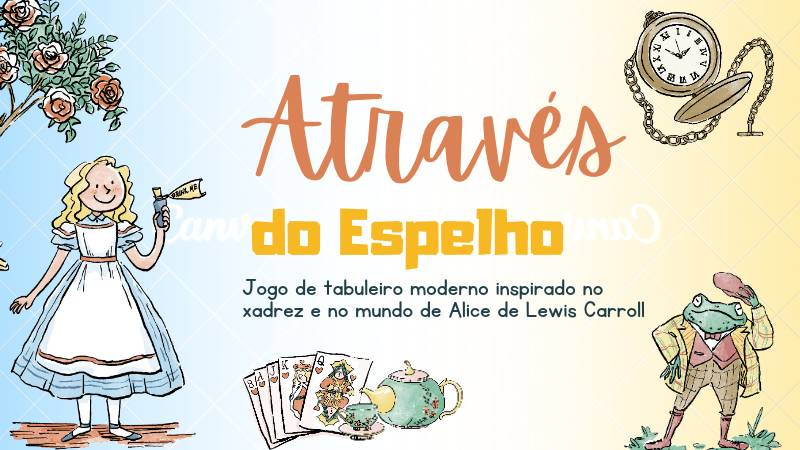
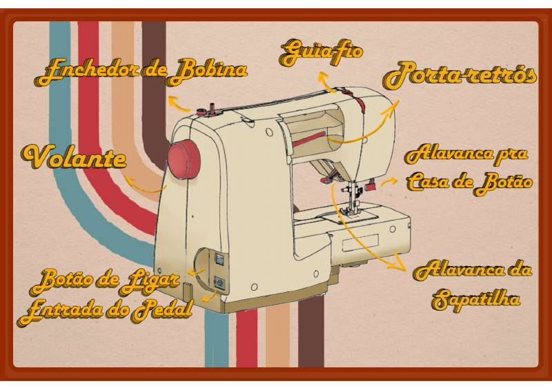
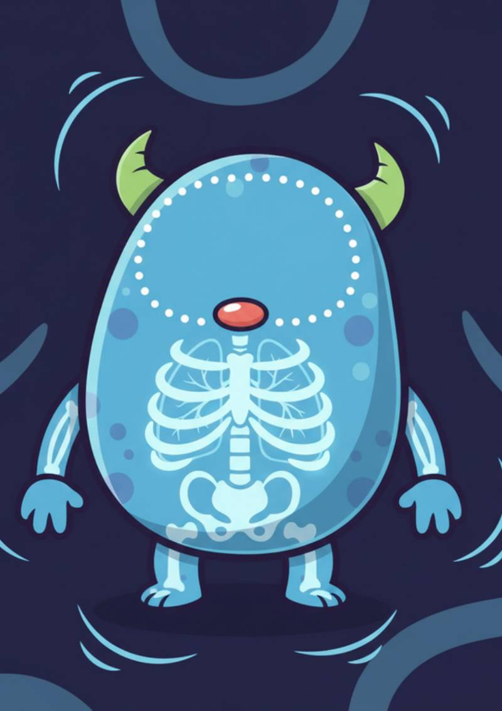
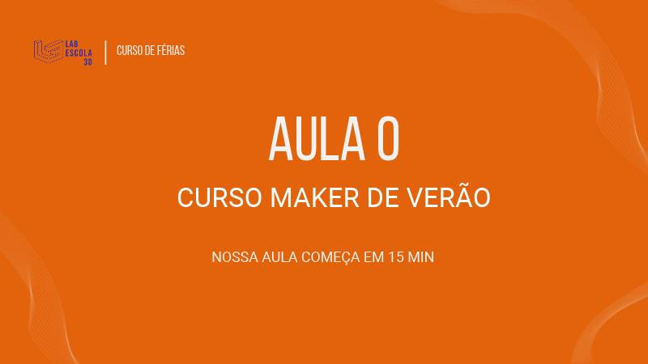
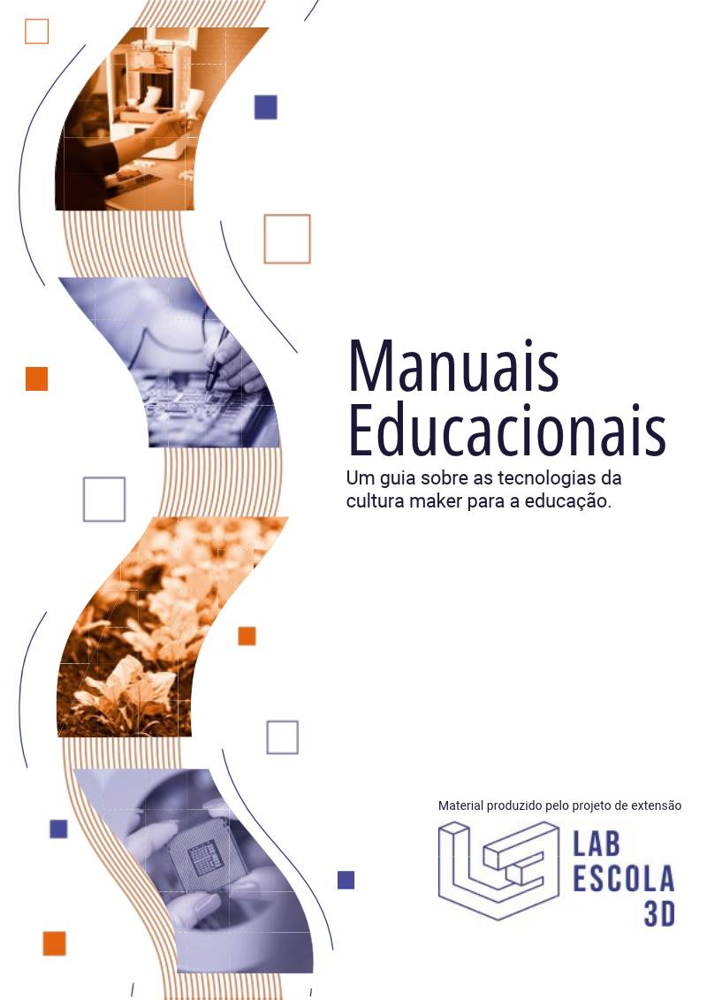
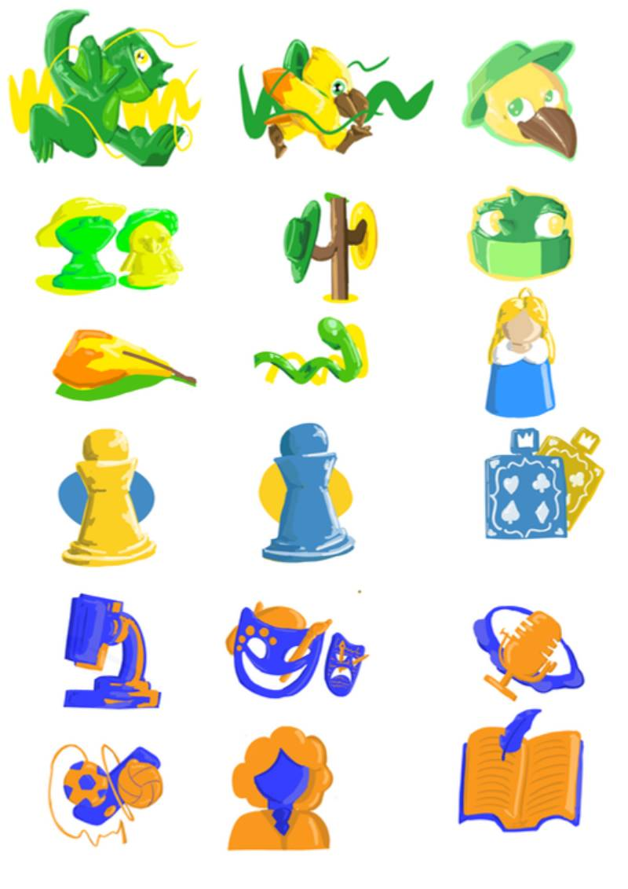

Materiais para usar na sua aula
Jogos, oficinas, peças 3D e manuais criados pelo Lab Escola 3D com escolas públicas do Rio. Tudo gratuito, para baixar e adaptar.
Nenhum material com esses filtros.
Investigadoras do conhecimento
Um jogo de pistas para a turma descobrir as grandes mulheres brasileiras da ciência, da arte, da política e do esporte.
Expedição Sonora
Uma viagem pelo Brasil de ouvido: a turma escuta uma música e descobre de que região ela vem.

Antropolojogo
Um jogo de tabuleiro de ciências sociais, criado com o LabES/UFRJ para a Olimpíada de Sociologia do Rio.

Através do Espelho
Jogo de Física da Raiane, com mecânicas de engajamento para a sala de aula.
Autoria: Raiane
Oficina de Gamificação
Uma oficina para professores vivenciarem dois jogos do LE3D e adaptarem a mecânica para a própria turma.

Oficina de Costura
Geometria com tecido e máquina de costura: a turma calcula perímetro e área e costura almofadinhas geométricas.

Oficina Makey Makey + impressão 3D
Duas estações para professores: uma caça aos órgãos com peças impressas em 3D e um jogo controlado por Makey Makey.

Curso Maker de Férias 2025
Um curso de férias para professores da rede municipal conhecerem a cultura maker na prática.
Kit do professor
Catorze gabaritos A4 para imprimir e preparar aula: tabuleiros, cartas, dados e fichas para adaptar a qualquer matéria.

Manual Maker
Guias gratuitos para levar a cultura maker, o Arduino, o Micro:bit, a impressão 3D e a horta escolar para a sala de aula.
Catálogo de Atividades
Roteiros de aula maker alinhados à BNCC e à BNCC Computação, com filtros por ano e componente.
Brindes impressos em 3D
Chaveiros, lanterna, spinner, colcheia, mapa e régua de engrenagens para imprimir e usar como apoio de aula.

Kit de divulgação do Lab
Logo, adesivos, bottons e crachás do Lab Escola 3D para imprimir, usar em aula e espalhar por aí.
Visitas COPPEi
Como é a visita ao Lab na COPPE: peças 3D, jogos de Humanas e de Exatas, e como a sua escola pode pedir a dela.
Memórias da Maré / Consolidating Maré
Uma réplica impressa em 3D do Rola-rola, o barril que os moradores da Maré criaram para levar água, vira objeto de aprendizagem numa aula de campo.